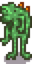

Secretos
Esta página enumera muchos de los secretos descubiertos en Stardew Valley.
"Easter Eggs" recurrentes
Hay algunos "easter eggs" que son recurrentes o están interconectados en Stardew Valley.
Sombreros
Los sombreros se pueden colocar en...
- Los Niños (en edad de Niño), caballos, perros y gatos. Se pueden quitar sujetando otro sombrero y haciendo clic de nuevo sobre ellos; esto quitará el sombrero viejo, pero no colocará el nuevo a menos que lo hagas de nuevo.
- Espantapájaros raro 3 (Alien). Después se pueden cambiar por otro sombrero, pero sólo se pueden quitar del todo rompiendo el espantapájaros raro que deja caer ambos objetos.
- Erizos de mar en las Peceras sosteniendo el sombrero y haciendo clic en la pecera. Se pueden quitar abriendo el inventario de la pecera y tomando el sombrero.
- Maniquíes y Maniquíes malditos sosteniendo el sombrero y haciendo clic en el maniquí.
Calzoncillos morados de la suerte
Los calzoncillos morados de la suerte del Alcalde Lewis tienen varios secretos.
- Darle a Lewis sus calzoncillos morados de la suerte mientras visita la Isla Jengibre hará que los use como atuendo de playa durante 28 días.
- Ponerlos en la sopa Luau obtiene una respuesta única del Gobernador y Lewis.
- Ponerlos en el puesto de granja de la Feria de Stardew Valley descalifica al jugador, y Lewis le da al jugador
 750 fichas de estrellas como soborno para mantener su secreto. Marnie también brinda un diálogo único en la Feria después de ver los calzoncillos en la exhibición.
750 fichas de estrellas como soborno para mantener su secreto. Marnie también brinda un diálogo único en la Feria después de ver los calzoncillos en la exhibición. - Al confeccionar con un lingote de oro se obtienen unos calzoncillos recortados morados de la suerte. Estos son equivalentes a los calzoncillos morados de la suerte para completar la misión o activar los otros secretos, pero el jugador también puede usarlos para una reacción divertida de Marnie y Lewis.
- Los calzoncillos recortados morados de la suerte también se pueden adquirir colocando una escalera en la ranura de los pantalones del jugador.
- Intentar regalárselos a Marnie da un diálogo único.
- Colocar una escalera en el dormitorio de Lewis da acceso a una sala secreta en forma de laberinto con estos pantalones calzoncilos al final. Si intentas recoger los calzoncillos, aparecerán unos calzoncillos morados de la suerte malditos que atacan lentamente al jugador y son inmunes a los ataques. Este proceso se puede repetir para obtener varios calzoncillos morados de la suerte.
- También después de la misión, se pueden conseguir de manera ilimitada, poniendo una escalera en la habitación de Lewis y completando un laberinto.
Niños Paloma
Convertir a los niños en palomas desbloquea varios huevos de Pascua.
- Es posible que reciba una llamada telefónica misteriosa: "Pones el altavoz en tu oído y te encuentras con una estática abrasiva y turbulenta. Pero espera... por debajo, puedes escuchar algo más... una voz de otro mundo... «N-O-S H-A-S A-B-A-N-D-O-N-A-D-O»". Esto ya no sucede una vez que desbloqueas el muñeco maldito a continuación.
- Si ves la televisión el 26 de Otoño (el día anterior a la Víspera de los espíritus) y eliges "???", aparecerá un Muñeco antiguo en la pantalla del televisor con un espeluznante mensaje ("Tú te has hecho esto a tí mismo... ahora soy libre.. ¡Hee hee hee!."), y un Muñeco Antiguo saldrá del televisor. A continuación, un Muñeco Antiguo maldito volará y atacará a los jugadores frente al Altar oscuro del egoísmo. Cuando lo mates, se convertirá en un gran pájaro negro y se irá volando. Al salir y volver a entrar en la Cabaña de la Bruja, el muñeco volverá a aparecer. Matar a este muñeco cuenta para el objetivo de Erradicación de Monstruos de matar a 200 murciélagos, y otorga 20 XP de Combate.
- En la Granja de cuatro esquinas, los jugadores pueden atrapar un Muñeco Antiguo una vez mientras pescan.
- Si has convertido a varios niños en palomas, hay un 15% de probabilidades de que pasen volando en formación en La cumbre.
Cangrejos de trufa
Cuando el jugador recoge una Trufa, se puede convertir en un "cangrejo trufa" similar a los cangrejos de roca de las minas.
Malo en la música
En el modo multijugador, si el ID multijugador único aleatorio de un jugador (sólo editable en el archivo de guardado) es divisible por 111, la música que produzca sonará desafinada:
- El emote de música producirá un sonido aleatorio desafinado en lugar de una de las melodías normales.
- El piano de la Cabaña de Elliott tocará tonos desafinados ("F4", "C5", "D5", "G#5") en lugar de los habituales ("B4", "D#5", "E5", "F#5"), y el otro Huevo de Pascua del piano no se activará.
Introducción
Logo


Al hacer clic en el logo de ConcernedApe durante la pantalla de carga, las gafas de sol (si están presentes) desaparecerán y los ojos se abrirán. También se oirá un sonido de pato/salpiqueo. También hay una pequeña posibilidad de que salga ConcernedApe sonriendo, junto con unos Junimos.
Mensajes de consejos
El juego lleva la cuenta de cuántas veces lo inicias y, en función de ese número, muestra mensajes agradables en la esquina inferior izquierda de la pantalla con el logotipo de ConcernedApe.
| Mensajes | |
|---|---|
| Veces Iniciadas | Mensaje |
| 2 | ¡Qué bien que hayas vuelto! |
| 3 | Conecta un mando de Xbox One o Xbox 360 para activar el modo mando. |
| 4 | Consejo: Dar regalos es una buena manera de hacer amigos entre los vecinos de Stardew Valley. |
| 5 | Truco: Pulsa Mayús. y haz clic para comprar 5 objetos a la vez. |
| 6 | Tras mejorar tu azada o tu regadera, ¡mantén pulsado el botón para aumentar su área de efecto! |
| 7 | Consejo: Haz clic derecho para usar el movimiento especial de un arma. |
| 8 | ¡Mira los programas de televisión para aprender trucos útiles, recetas y más! |
| 9 | La vendedora ambulante visita Stardew Valley cada semana. Vende una amplia variedad de objetos, ¡a menudo a precios desorbitados! |
| 10 | ¡Gracias por jugar! |
| 15 | La última frase de Elliott: (frase construida al azar) |
| 20 | ♡ |
| 30 | Reto: Pásate el Viaje del Rey de la Pradera sin morir. |
| 100 | Has abierto el juego 100 veces. |
| 1,000 | Has abierto el juego 1000 veces. |
| 10,000 | ¡Has abierto el juego 10.000 veces! Impresionante. -Ape |
Menú de título
- Si haces clic diez veces en la letra "E" de "Stardew", aparecerá un alienígena abriendo una puerta detrás de la letra. Sonreirá y saludará durante dos segundos antes de desaparecer. Tenga en cuenta que esto no funciona en Chino.
- Si haces clic en las hojas diez veces, aparecerán tres Junimos en el logo y saludarán.
- Si pulsas diez veces el tornillo inferior derecho sobre la letra "W", aparecerán 4 mariposas de distintos colores.
- Si haces clic varias veces en la esquina inferior izquierda del cuadro de título, aparecerá una carita feliz. Puedes hacer clic en el agujero de la R para colocarla, lo que hará que aparezca vegetación alrededor del cuadro de título y que salgan pájaros volando de él.
- Si usas un mando, pulsar B en Xbox u O en PS4 hará que las nubes alrededor del título se muevan a gran velocidad. Solo funciona donde los dos pájaros están volando, y se detiene al bajar el menú.
Creación de personaje
Teclas Especiales
Al introducir en el cuadro de texto de "Nombre", "Nombre de la granja" o "Cosa favorita" ciertas teclas en el menú de Creación de personaje, estos producirán sonidos y símbolos especiales.
- Al pulsar las siguientes teclas se reproducen sonidos especiales.
- Pulsar
<reproducirá un sonido "ding" - Pulsar
$reproducirá un sonido "plink" - Pulsar
*reproducirá un sonido de "golpe de roca" - Pulsar
=reproducirá un sonido "pop" - Pulsar
+reproducirá un sonido de aplastamiento
- Pulsar
- Al pulsar las siguientes teclas se reproducen caracteres especiales.
- Pulsar
<escribirá♡, un corazón - Pulsar
>escribir√°‚ñ∑, una flecha triangular a la derecha - Pulsar
@escribir√°‚óÅ, una felcha triangular a la izquierda - Pulsar
$escribir√°‚åæ, un doble circulo - Pulsar
*escribir√°üí¢, un s√≠mbolo común de furia entre los japoneses - Pulsar
=escribir√°‚òÜ, una estrella
- Pulsar

- Presionar los botones del mando también producen sonidos/caracteres especiales.
Truco de generación de objetos
Sólo para PC / dispositivos móviles: Nombrar a tu personaje con un ID de objeto interno entre paréntesis te dará el elemento que corresponde con el número siempre que un NPC te mencione por tu nombre. Por ejemplo, si ingresas [645][499][163] obtendrás un Aspersor de iridio, Semillas milenarias, y una Leyenda. (Este exploit también funciona para nombrar niños y animales).
Sólo para móviles: Nombrar un personaje con un ID de objeto no válido (como [26]) generará un Objeto erróneo.
Cosa favorita
Escribir "ConcernedApe" como tu cosa favorita al momento de crear tu personaje, resulta en un texto adicional al momento de consumir una Fruta estelar.

Escribir algo que contenga la palabra "Stardew" como tu cosa favorita al momento de crear tu personaje, resulta en un texto adicional: "Sientes una conexión inquebrantable con el mismísimo valle". Aparece cuando consumes una Fruta estelar. Tenga en cuenta que la "S" de "Stardew" debe ir en mayúsculas.

Menús del juego
Pantalla de envíos
Algunas animaciones raras pueden ser vista en el fondo de la pantalla de envíos al final del día, dependiendo de ciertas condiciones.[1]
- Los números superiores a 999.999 se desbordarán sobre el espacio en blanco y se moverán hacia arriba y hacia abajo siguiendo un patrón ondulado.
- En el día 24 de Invierno, Papá Noel puede ser visto con algunos renos cruzando por la parte superior de la pantalla.

- Si no es el día 27 y no ha llovido, hay una pequeña posibilidad de que un ovni cruce la parte superior de la pantalla.
- Permanecer mucho tiempo en la pantalla puede hacer que aparezca más a menudo.


- Si no es 27 y no ha llovido, hay una pequeña posibilidad de que aparezca una luna llena en la parte superior derecha de la pantalla. Si haces clic 11 veces, se revelará el hombre de la luna.


Roca solitaria

La roca solitaria no es un área, pero tiene una ubicación en el mapa de Stardew Valley. Al hacer clic en la piedra solitaria del mapa, se reproducirá un efecto de sonido de roca. Después de hacer clic en la piedra solitaria y alrededor del momento en que se reproduce el efecto de sonido de roca, la pantalla del mapa se cerrará por completo.
La piedra solitaria tampoco ha sido mencionada por ningún aldeano/personaje ni hay ninguna historia sobre ella oculto en los archivos del juego ni mencionado por ConcernedApe.
Registro de regalos
Cuando tengas al menos cuatro corazones de amistad con un personaje, al hacer clic en su imagen en el registro de regalos (al que se accede desde la pestaña social haciendo clic en su entrada) sonará un sonido y se mostrará una animación especial (diferente para cada personaje) durante unos segundos.
Objetos secretos
Cajas bloqueadas

Las primeras letras del Libro Perdido incomprensible del Museo forman estas palabras:
- SUPERPEPINO PUEBLO
- MAYONESA D PATO SALON
- BOLLO EXTRAÑO CAJA D JUGUETES
Se pueden encontrar tres estatuas secretas colocando objetos en cajas bloqueadas por todo el valle siguiendo estas instrucciones:
| Objeto secreto | Requisito |
|---|---|
| Coloca un Superpepino en la caja marrón situada en la zona vallada al norte de la Herrería. | |
| Coloca una Mayonesa de pato en la caja metálica parcialmente escondida en la parte trasera del Salón Fruta Estelar. | |
|  ??Foroguemon?? | Coloca un Bollo extraño en el cofre de la habitación de Vincent, en el Camino del Sauce, 1. |
La caja detrás de MercaJoja (al noreste) no hace nada.
Espada galaxia
Después de encontrar y donar los cuatro Rollos de enano al Museo, el jugador recibirá la Guía de traducción enana. Si el jugador avanza hasta el Cementerio, ahora podrá leer una de las lápidas antes ilegibles.
| “ | “Traduces el idioma enano: De pie entre los tres pilares, con un regalo tan preciado como el cielo: Un arco√≠ris forjado de tierra, y no mar. Solo entonces la galaxia atenderá tu llamada.” |
Esto apunta al jugador para que se dirija al Desierto y llegue a los tres pilares, en el noreste. Pararse en el centro de los pilares sosteniendo una Esquirla prismática, hará que la esquirla se transforme en la Espada galaxia.
Junimo de peluche
El Junimo de peluche es una pieza de mueble única. Se puede encontrar sacudiendo un arbusto en la esquina noroeste de Pueblo Pelícano el día 28 de cualquier estación exactamente a las 12:00.

Cápsula extraña
Después de que aparezca una Cápsula extraña y se rompa, hay un 1% de probabilidad de avistar una criatura oscura ondulando al anochecer en la Parada de autobús, o correr detrás de los árboles y arbustos en Pueblo Pelícano (Cerca del árbol al norte de Camino del Sauce, 1, en el arbusto debajo de Camino del Sauce, 2, y en los arbustos junto al puente que lleva a La playa).

La criatura oscura

La criatura oscura
La criatura oscura
Objetos encontrados al pescar
Consulte las páginas de cada artículo para ver las imágenes de su ubicación.
| Imagen | Nombre | Ubicación |
|---|---|---|
| «Barco» | Pescando en el punto suroeste de la Granja de la Playa. | |
| Papelera decorativa | Pescando en la fuente al oeste del Centro Cívico de Pueblo Pelícano. Este artículo también se puede encontrar en el Catálogo de muebles. | |
| Cuadro de vegetación | Pescando en el río al oeste del Norte de la Isla Jengibre. | |
| Sombrero de rana | Pescando en la cueva de la Rana Goloso en la Isla Jengibre. | |
| Estatua del Goloso | Pescando en la Cueva Pirata de la Isla Jengibre. | |
| Krobus de iridio | Pescando en el punto más al sur del Bosque Tizón, cerca de la entrada a Las Cloacas, con un nivel de pesca de al menos 15. | |
| Salvavidas | Pescando en la trastienda de la Tienda de pesca de Willy. | |
| «Física 101» | Pescando en la Forja del Volcán. | |
| Pegatina pirámide | Pescando en el estanque sur del Desierto de Calico. | |
| Figurilla de ardilla | Pescando en la orilla oeste del río, en una zona de la Isla Jengibre accesible a través del volcán. | |
| «Paisaje» | Pescando en el estanque fuera del Spa (No se puede obtener en Invierno.) | |
| Maceta de pared | Pescando en el estanque del Bosque Secreto en cualquier estación. |
Filomiau
Si el jugador arroja un Muñeco antiguo al estanque de lava del piso 100 de las Minas, o en la lava junto al cofre de la Forja en Isla Jengibre, una serpiente de hueso de Terraria surgirá del estanque y le entregará la Roca de la lejanía. Si coloca este objeto en el pedestal de la planta que se encuentra en el sótano de la Torre del Mago, se abrirá un portal, donde un gato entrará y le entregará al jugador el arma Filomiau.
Mundo
Placas en la Caverna Calavera
Se ha descubierto que las placas que pueden encontrarse ocasionalmente en las paredes de la Caverna de la Calavera contienen un texto codificado mediante un cifrado.[2]
Las placas que fueron encontradas colgadas en la pared de los pisos han sido descifradas para dar lo siguiente:
| “ | “Estamos malditos mucho iridio” |
Esto puede ser referencia a las Babas Lilas que pueden dejar caer una Mena de iridio como botín, y que son frecuentemente encontradas en estos pisos
Las placas en las paredes de los niveles que son habitados por Momias han sido descifradas para dar lo siguiente:
| “ | “El mago nos encerr√≥ en esta prisi√≥n hasta que un d√≠a un h√©roe nos ponga a descansar” |
Esto puede ser o no ser referencia al Mago que vive en el Bosque Tizón.
Placa del volcán
La placa situada sobre la Forja se ha traducido[3] para decir:
| “ | “ait otusnats tomu htam doo smol din mopu o uy hamu duuonh snau” |
que en Enano es:
| “ | “nuestros antepasados vinieron del cielo, pero hicieron un nuevo hogar por debajo de la piedra‚Äù” |
Viejo maestro Cannoli
Se puede obtener una Fruta estelar del Viejo maestro Cannoli en el Bosque secreto, a cambio de una Baya de gema dulce.
Diálogos raros
Al elegir "Comprar suministros" en el Rancho de Marnie, el texto bajo el retrato de Marnie dice normalmente "¡Suministros para animales a la venta!". Pero hay un 0,01% de probabilidad de que el texto diga
| “ | “*sigh*... Cuando la puerta se abri√≥, pens√© que era Lewis.” |
Al entrar en la tienda de Robin o Marnie, existe la posibilidad de que aparezca una burbuja de diálogo con ellas diciendo
| “ | “¬øLew...? Oh...” |
Al entrar en la tienda de Pierre, existe la posibilidad de que aparezca una burbuja de diálogo con él diciendo
| “ | “¬øHas tra√≠do el monedero?” |
Al entrar en el Salón Fruta Estelar, existe la posibilidad de que aparezca una burbuja de diálogo con Gus diciendo
| “ | “Parece que necesitas una bebida.” |
Al entrar en el Museo, existe la posibilidad de que aparezca una burbuja de diálogo con Gunther diciendo
| “ | “Hueles a tierra... ¡Genial!” |
Piano de Elliott
Hay dos secretos con el piano en la Cabaña de Elliott:
- Cuando Elliott está trabajando en su escritorio, tocar las ocho primeras notas de la Apertura de Stardew Valley en el piano hará que Elliott se vuelva hacia el jugador con un emoticono de corazón. (Esto no afecta a su amistad con el jugador.) Si etiquetas las teclas del piano del 1 al 4 de izquierda a derecha, la melodía se puede tocar con estas notas a cualquier velocidad: 2432 3421.
- Véase también el secreto de Malo en la música.
Criatura de playa
En muy raras ocasiones, puede aparecer una criatura verde al sur de los muelles principales de la playa. No hay forma de interactuar con ella; al cabo de un rato, nadará hacia el sur y desaparecerá de la pantalla.
Hay una probabilidad aproximada del 0,06% por segundo (0,001% por tick de juego) de que la criatura intente aparecer en una casilla aleatoria cerca de los muelles (ver zona de aparición más abajo). La criatura sólo aparecerá si esa casilla aleatoria es agua abierta, y hay una línea vertical de agua abierta entre esa casilla y el fondo del mapa, lo que reduce significativamente la probabilidad. No hay límite en el número de criaturas que pueden aparecer, pero es muy raro que aparezca más de una criatura a la vez y nunca se ha informado de ello.
La misma criatura puede verse en el evento 14 de corazones de Krobus, en el que lleva a la figura sombría en sus tentáculos (ten en cuenta que en este evento, la criatura no es una aparición aleatoria como la que se encuentra durante el juego normal).

La criatura del juego.

La animación de la criatura.

El área de aparición de la criatura.
Criatura oscura
Existe una pequeña probabilidad aleatoria de ver una gran criatura oscura por la noche en Pueblo Pelícano, Bosque Tizón o Bosque Secreto. Esta criatura es más grande que la criatura oscura que puede aparecer después del evento Cápsula extraña. Existe una probabilidad aleatoria muy pequeña de que esta criatura deje una huella.
Babas
- Las Babas pueden incubarse en lugares inusuales utilizando una Incubadora de babas, incluyendo Pueblo Pelícano o el Ferrocarril. Las Babas que nacen en el pueblo interactúan con la gente del pueblo, saludándoles por su nombre y haciendo que la gente del pueblo les devuelva el saludo. Ten en cuenta que esto no funciona en todas las ubicaciones, en algunos lugares las babas desaparecerán de la noche a la mañana.
- Las babas también pueden incubarse dentro de la Casa de campo. Si estás casado, tu cónyuge puede reaccionar a la presencia de la baba con varios diálogos divertidos mientras intenta matarlo.
Eventos aleatorios
Consulte Eventos aleatorios.
Altar de las ilusiones
El uso del Altar de las ilusiones para agregar códigos de generación de objetos al nombre de tu personaje mostrará aleatoriamente uno de estos mensajes de chat:
- ConcernedApe: ¿Qué tipo de nombre es ese? Parece sospechoso...
- Sr. Qi: Fácil {{nombre de objeto}}, ¿huh? Me has decepcionado, jóven. Pensé que querías pasarte este juego de manera limpia.
- *El abuelo agita su cabeza... «Construí esta granja a la antigua, no con {{nombre de objeto}} ilimitados...'
- A ConcernedApe no le gusta que estés haciendo trampas...
- ConcernedApe: en realidad no me importa... diviértete.
- ¡Llamando a todas las unidades! ¡Llamando a todas las unidades! ¡Tenemos un ladrón de {{nombre de objeto}} a la fuga!
Cumbre
Alcanzar la perfección en la habitación de nueces de Sr. Qi desbloquea el acceso a La cumbre. Cuando lo visite, existe la posibilidad de que vea pasar algo volando en la distancia:
- 25% de probabilidad de un ave estacional;
- De lo contrario, si ha convertido a varios niños en palomas, hay un 15% de posibilidades de que pasen volando en formación;
- De lo contrario, si ha visto el evento de 8 corazones de Harvey, hay un 10% de probabilidad de que un jet pase volando;
- De lo contrario, si has visto el evento de 10 corazones de Maru, hay un 5% de probabilidad de que MarILDA pase volando.
- Puede que Papá Noel aparezca el 25 de Invierno.
Chat
- Al ingresar /cheat, /cheats, /imacheat, /money, /showmethemoney, /freegold, /debug, or /rosebud muestra un mensaje de ConcernedApe: "ConcernedApe: Buen intento..."
- Al ingresar /ca, /ape, or /concernedape se muestra un mensaje de ConcernedApe. Este mensaje se muestra la primera vez: "Hola. ¡Gracias por mudarte a Stardew Valley! Espero que disfrutes mucho de tu nueva vida aquí. ¡Cuídate!" Si lo haces de nuevo, aparecerá este mensaje: "ConcernedApe está trabajando duro..."
- Al ingresar /qi se muestra un mensaje del Sr. Qi. La primera vez que dice: "Sr. Qi: Eh, joven. Sí, estoy aquí. ¿Qué te esperabas?" La segunda vez, se muestra este mensaje: "Sr. Qi: Oye... ¡Sigue trabajando así de bien y no dejes de luchar por alcanzar el éxito! Nos veremos pronto..." A partir de entonces, recibirás el mensaje: "Sr. Qi está ausente.".
Curiosidades
En el primer evento en directo de Stardew Valley Cup, ConcernedApe dijo que hay un secreto que no cree que nadie haya encontrado nunca. Dijo que:
"Supongo que se podría decir un mensaje o algo así. Y en realidad el mensaje ya no es relevante. Era como originalmente revelar algo que es como en realidad ni siquiera es cierto ya. Pero todavía no creo que nadie lo ha encontrado, y no sé si alguien lo hará. Debido a que es extremadamente oscuro para encontrarlo."
Referencias
- ↑ Consulte ShippingMenu::update en el código del juego. El código establece que el OVNI no puede ocurrir cuando la fecha del juego es 28, pero la fecha cambia internamente antes de que aparezca la pantalla de envío.
- ↑ https://www.reddit.com/r/StardewValley/comments/4buz5l/cave_wall_plaque_glyph_symbol_translation_attempt/
- ↑ https://www.reddit.com/r/StardewValley/comments/kjvjz0/15_spoilers_here_mural_glyph_translation/
Historial
- 1.1: Secretos añadidos: hoja haciendo clic en la pantalla de título.
- 1.3: Se eliminó el exploit de nombrar un ID de elemento de las versiones de consola.
- 1.4: Añadidos secretos: luna llena y la letra "W" de la pantalla de título haciendo clic. Se corrigió el error de consumir toda la pila de objetos; diálogo de cosa favorita con errores arreglados; se corrigió papel de pared que funcionaba para obtener la Galaxy Sword.
- 1.5: Secretos agregados: calzoncillos morados de la suerte de la isla, sombreros de erizo de mar, extraño secreto de la cápsula después de que se rompe, cara feliz de la pantalla de título, mensajes de código de generación de elementos del santuario de las ilusiones y sobrevuelos en la cumbre.